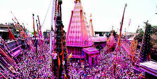
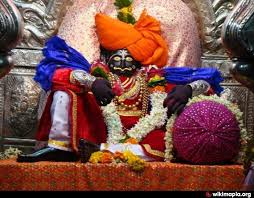
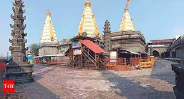

Jyotiba Mandir
  
Jyotiba Temple is a holy site of Hinduism near Wadi Ratnagiri in Kolhapur district of Maharashtra state in western India.
The deity of the temple is known by the same name. An annual fair takes place on the full moon night of the Hindu months of Chaitra and Vaishakha.
Video Link
Direction to the Jyotiba Mandir